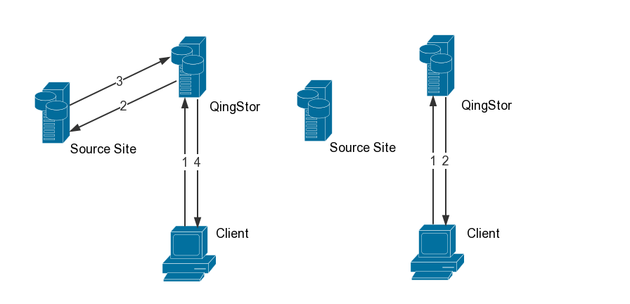

数据迁移方案
亿栖云对象存储推出了无缝数据迁移方案，帮助用户将业务数据从自建平台或者其他对象存储平台高效完整地迁移至亿栖云对象存储服务。
本方案提供两种迁移方式：
- 被动触发迁移
- 用户主动迁移
综合运用两种迁移方式，可以在不中断业务的前提下，平滑完整地进行迁移。本方案首先介绍亿栖云对象存储提供的两种迁移方式，再对迁移步骤进行详细说明。
被动触发迁移 - 外部镜像
对于已经设置了外部镜像的亿栖云对象存储 的 Bucket，当请求的 Object 在 Bucket 中不存在时，亿栖云对象存储服务端会把 Object Key 拼接在外部镜像源站后作为抓取的源链接，然后自动从源站抓取（回源），并写入到 Bucket 当中。在回源过程中，请求这个 Object 的客户端，有可能会下载到源站文件，也有可能收到重定向到源站相应路径的 302 请求。在回源完成后，客户端能够直接从亿栖云对象存储的 Bucket 中获取这个 Object。亿栖云对象存储建议用户可先使用 Head Object 返回 200 成功来确认 Object 存在。

下面结合示意图，说明外部镜像的工作原理:
假设用户的外部镜像源站为 http://img.example.com，在亿栖云对象存储的 Bucket 的默认域名为 http://bucketname.jn2.is.yiqiyun.com。
示意图左侧为首次请求:
- 用户发起获取 Object 的请求，如
http://bucketname.jn2.is.yiqiyun.com/blog.png； - Object 在亿栖云对象存储的 Bucket 中不存在，且用户已经为该 Bucket 设置了外部镜像源站，此时，亿栖云对象存储服务端会将 Object Key
blog.png拼接到源站，生成源链接http://img.example.com/blog.png； - 亿栖云对象存储服务端从该源链接抓取；
- 在抓取过程中，请求该 Object 的客户端，有可能会下载到源站文件，也有可能收到重定向到源站相应路径的 302 请求。
示意图右侧为抓取完成后，再次发起请求:
- 用户发起获取 Object 的请求；
- Object 在亿栖云对象存储的 Bucket 中已存在，直接返回。
备注：
- 外部镜像 API 请参考 Bucket External Mirror
- 外部镜像，需要源站在提供下载文件时能返回
Content-Length头，否则回源失败。
用户主动迁移 - Fetch API
如果需要迁移单个源站资源，可以使用 PUT Object - Fetch 接口。该接口通过请求头 x-qs-fetch-source 附带源链接。亿栖云对象存储会从该链接抓取资源，保存到指定的 Object 中， 并且在抓取时能够自动处理源链接服务器返回的 301/302/307 等重定向请求。该接口同步下载文件，完成后才会返回结果。
使用该接口，根据不同场景，亿栖云对象存储服务端会返回如下错误信息：
- 409 ：fetch_in_process，表明同一时间相同源链接的 Fetch 请求正在进行，或者被动触发的外部镜像功能正在抓取该源链接对应的文件；
- 404 ：object_not_exists，获取的 Object 不存在；
- 503 ：upstream_failed，无法与 Fetch 请求的源链接或者外部镜像的源站建立链接，或源站服务器返回 200，3xx，404 范围之外的错误代码，或链接中断；
- 其他错误码，可参考：错误信息
当 Object 特别大或源站下载速度比较慢时，该 API 请求有可能会导致客户端 TCP 超时。针对这种情形，亿栖云对象存储建议用户可以先使用 Head Object 获取并比较源站文件和 Bucket 中 Object 的大小与时间戳，如果 Head Object 返回 404，客户端需重复调用一次 Fetch Object 接口； 请求若返回 409 则说明抓取已经开始。
备注：
- Fetch API 请参考 PUT Object - Fetch；
- Fetch 功能，需要源站在提供下载文件时能返回
Content-Length头，否则回源失败； - 亿栖云对象存储建议用户使用本文介绍的 qscamel 工具，便捷的实现迁移。
用户主动迁移 - qscamel
qscamel 是把 HTTP(s) 形式的数据高效地批量迁移到亿栖云对象存储的命令行工具。其输入可以是包含源链接的文件，也可以是其他对象存储平台的 Bucket 名称。更多介绍请参考 qscamel
qscamel 有如下特点:
- 支持并行迁移，即同时迁移多个对象。
- 支持给迁移任务命名，用来继续迁移未完成的迁移任务。qscamel 会记录本次迁移任务中成功迁移的源站。在退出后、重新执行时，qscamel 会跳过已经成功迁移的源站资源，迁移剩下未完成的源站资源。
- 支持灵活的覆盖模式。qscamel 默认进行增量迁移，即通过比较源站资源和亿栖云对象存储的 Bucket 中 Object 的最后修改时间，仅同步亿栖云对象存储的 Bucket 中已存在但非最新的 Object，及亿栖云对象存储的 Bucket 中不存在的 Object。
- 除了默认的增量迁移外，qscamel 还支持参数
--ignore-existing，即：不覆盖亿栖云对象存储的 Bucket 中已存在的 Object；以及参数--overwrite，强制覆盖亿栖云对象存储的 Bucket 中已存在的 Object。 - 支持指定日志文件。qscamel 默认输出到标准输出，也可以指定输出到日志文件。
推荐使用步骤
- 通过命令行工具 qscamel 将冷数据批量迁移到亿栖云对象存储。
- 更改业务的数据上传路径，将路径设置为亿栖云对象存储的 Bucket 默认域名，或者亿栖云对象存储的 Bucket 所绑定的自定义域名。
- 配置外部镜像功能，以使得访问不存在的 Object 时触发回源。
- 外部镜像功能只针对 Object 不存在的情况，不会从源站拉取新版本 Object。如果业务逻辑中没有覆盖更新同一 Object 的场景，可以直接让业务从亿栖云对象存储中读取；如果业务逻辑中有覆盖更新同一 Object 的逻辑，建议先更新业务代码，让业务上传数据时同时更新到源站和亿栖云对象存储，然后就可以使用亿栖云对象存储来承载业务。
- 再次使用命令行工具 qscamel 增量同步，以保证源站到亿栖云对象存储的 Bucket 数据迁移完成，没有遗漏。
- 停止源站的使用。
FAQ
-
请问回源过程下载数据会产生费用吗？
会按照请求次数收费。内网下载请求不收流量费。假如是外网下载请求，若已经回源成功到亿栖云对象存储的 Bucket 中，会收取下载流量费用；假如返回 302 重定向到源站，则不收取流量费用。
-
请问被动迁移有什么限制 ?
源站方面需要返回文件的长度
Content-Length，并且从源站下载不能要求用户认证。亿栖云对象存储会最大限度保证客户端请求成功。